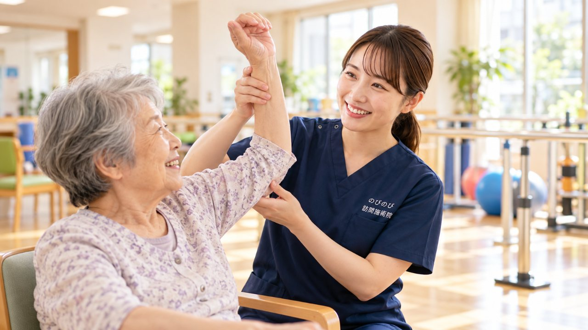

そろそろ一区切りですね。担当の理学療法士からそう言われて、ほっとする一方で、これからどう体を保てばいいのか不安になるご家族は少なくありません。とくに、退院後にがんばってリハビリを続けてきた方ほど、そのあとの空白が気がかりになります。ここでは、なぜ終了になるのか、終わったあと体に何が起こりやすいのか、そして空白をつくらないためにどんな選び方があるのかを整理しました。
かいつまんで言うと、リハビリの終了は、多くの場合、体が悪くなったからではなく制度上の区切りです。終わってから間があくほど体は戻りやすいので、早めに次を考えておくと安心です。
なぜリハビリは「終了」になることがあるのでしょうか
医療保険のリハビリテーションには、発症からの日数や1か月あたりの単位数に区切りがあります。介護保険の訪問リハビリ・通所リハビリも、状態が落ち着いて当初の目標に達したと判断されると、いったん終了になることがあります。これは体が悪くなったからではなく、制度上の区切りであることがほとんどです。
ですから、終了と言われたことをご本人やご家族の努力不足のように受け取る必要はありません。ただ、区切りがついたあとをどうするかは、あらためて考えておく必要があります。
終わったあと、体はどうなりやすいのでしょうか
動かさない時間が続くと、筋肉はやせやすく、関節の動く範囲もせまくなりがちです。ご高齢の方は、数週間動かないだけでも立ち座りや歩く力が落ちることがあります。とくに股関節、膝、足首、肩は固まりやすく、いちど固まると元に戻すのに時間がかかることもあります。
痛みやこわばりが戻ると、外に出るのがおっくうになり、さらに動きにくくなる。こうした流れに入ってしまうと、生活の範囲がじわじわとせまくなっていきます。せっかく杖で歩けるようになったのに、また車いすに戻ってしまった。そうしたお話は実際にうかがいます。そのため、リハビリが終わったあとも、体を動かす機会を絶やさないことが大切になります。
訪問での鍼灸が受け皿になれる理由
のびのび訪問施術院では、はり・きゅうをベースに、その日の体の状態を確認しながら、こわばった筋肉をゆるめる手技や、動かせる範囲を保つ運動なども組み合わせます。これらについて別途の料金はいただきません。一定回数で終了という区切りがなく、体の状態や季節に合わせて、続けたいあいだ続けていけるのが大きな違いです。
国家資格を持つ施術者が、その日の体調を確かめながら、必要なケアをその場で選びます。固まりやすい膝の裏をていねいにほぐす、足首をゆっくり動かして動く範囲を保つ、冷えた足をお灸で温める。毎回まったく同じ内容ではなく、その日にいちばん必要なことを行います。1回はおおむね20〜30分です。
劇的な回復をお約束するものではありません。痛みやこわばりがやわらぎ、動きやすさを保ちやすくなると話される方もいらっしゃいますが、感じ方には個人差があり、医師の治療やご自身の日々の積み重ねと合わさって出てくるものです。
リハビリとの違いと、併用について
訪問リハビリは動く力を取り戻す・高めることを目指し、主に介護保険を使います。要介護認定が必要です。訪問での鍼灸は、痛みやこわばりをやわらげ、いまある力を保つことが中心で、医師の同意にもとづく医療保険を使います。目的も制度も別なので、両立できます。訪問リハビリとの違いは訪問鍼灸と訪問リハビリの違いで比べています。
リハビリを続けながら併用することもできますし、終了したあとの受け皿として始めることもできます。リハビリの単位を使い切ってしまい、これ以上は増やせないという場合でも、医療保険の枠は介護保険の限度額とは別に扱われます。どちらが合うか、併用すべきかは、担当のケアマネジャーや主治医にご相談いただくとスムーズです。こちらからも、必要に応じて情報を共有します。
費用は、介護保険の枠を使わずに続けられます
医師の同意にもとづく医療保険を使います。はり・きゅうのどちらか一方であれば1回の総額は3,950円、1割負担の方でおよそ395円が目安です。はりとお灸の両方を行う場合は総額4,120円、1割の方で412円ほどになります。
使うのは医療保険なので、介護保険の支給限度額とは別枠です。デイサービスやヘルパー、訪問リハビリを限度額いっぱいまで使っている方でも、その枠を減らすことなく、体のケアをひとつ足せます。エリア内であれば別途の出張費はかかりません。明細は月ごとにお渡しします。
始めるタイミングと、向いている方
リハビリが終わってから、また体が固くなってきた。動かす機会を絶やしたくない。通うのは難しいが、家でなら続けられそう。そうした方に向いています。リハビリの終了が見えてきた段階で早めにご相談いただくと、空白をつくらずに移行しやすくなります。
まずはいまのお体の状態と、生活の中でお困りのことをうかがい、その方に必要なケアをご提案します。ご本人・ご家族はもちろん、担当のケアマネジャーや医療機関からのご相談・ご紹介もいただいています。この方に合うか相談したい、という段階からで構いません。
区切りが見えてきたら、早めにご相談ください
終わってから間があくほど、体は元に戻りやすくなります。早めに動くことで、せっかく取り戻した力を保ちやすくなります。合うかどうかの見きわめも含めて、ご相談だけでも構いません。
うかがっているのは、大阪市（淀川区・東淀川区・都島区・北区・旭区）、豊中・吹田・茨木・箕面・摂津・池田、尼崎・伊丹です。担当のケアマネジャーや、退院前の病院からのご相談も歓迎です。
よくある質問
リハビリが終了した直後からでも受けられますか？
医師の同意があるなど所定の要件を満たす場合、医療保険の対象となることがあります。空白期間をあけずに始める方も多くいらっしゃいます。
リハビリと同時に受けてもいいですか？
介護保険のリハビリと、医療保険での鍼灸は制度が別なので、併用できます。担当のケアマネジャーにご相談ください。
効果はありますか？
こわばりがやわらいだ、動きやすさが保てていると話される方もいらっしゃいますが、感じ方には個人差があります。無理をしない形で続けることを大切にしています。
要介護認定がないと受けられませんか？
要介護認定は要件ではありません。医療保険で受けるため、医師の同意があるなど所定の要件を満たす場合には、認定がなくても対象となることがあります。
いくらかかりますか？
はり・きゅうのどちらか一方なら1回の総額3,950円、1割負担の方でおよそ395円が目安です。両方行う場合は総額4,120円、1割の方で412円ほどです。介護保険の限度額とは別枠で、エリア内で別途の出張費はいただきません。
ケアマネジャーから紹介してもらえますか？
はい。ケアマネジャーや医療機関からのご紹介・ご相談をいただいています。連携しながら進めますので、お気軽にお声かけください。